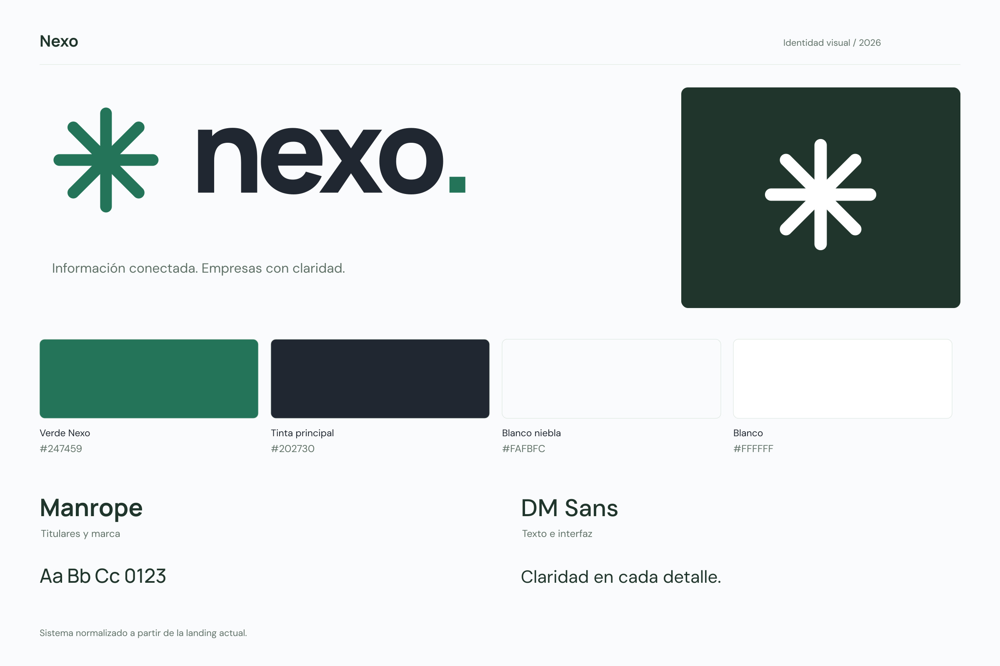

La identidad de Nexo.
Lista para usar.
Manual de 21 páginas, logotipos e isotipos en SVG, PNG y JPG, paleta corporativa, tipografías con licencia y plantillas de aplicación.


Manual de 21 páginas, logotipos e isotipos en SVG, PNG y JPG, paleta corporativa, tipografías con licencia y plantillas de aplicación.
